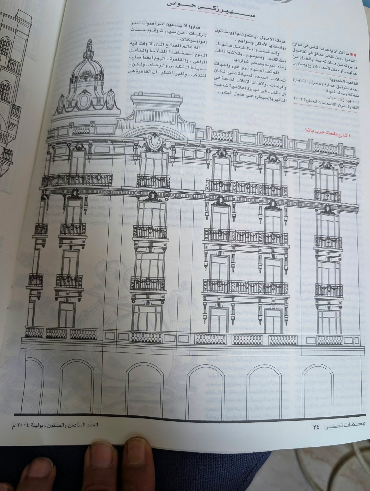
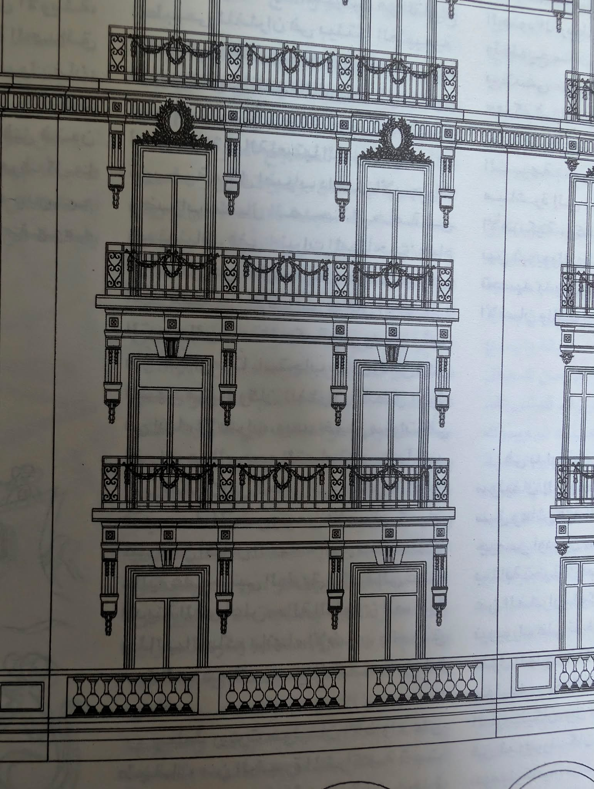

Building 1 · complete elevation · KA-002
Whole elevation

Long symmetrical façade; domed corner tower, rows of repeated balconies/windows, layered horizontal cornices and arched ground floor.
Close-up · KA-001

Balcony railings, festoon details, window surrounds, panelled cornices and repeated vertical supports.